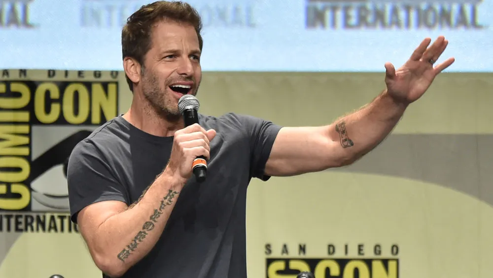

Zack Snyder não descarta volta do Snyderverso e sequências de Liga da Justiça
Publicado em: 27 de Fevereiro de 2026
Na era das infinitas possibilidades, Zack Snyder está convicto de que a volta do Snyderverso não é impossível, tampouco sequências para sua versão da Liga da Justiça.

Em meio a reformulação da franquia com a DC Studios de James Gunn, o cineasta contou no podcast Happy Sad Confused que já discutiu como poderia dar continuidade à sua história no DCEU.
Entre as possibilidades, o diretor cita as animações e os quadrinhos como formas de lançar as Partes 2 e 3 de seu último filme para o antigo universo:
"Nós, definitivamente, discutimos bastante sobre isso. Vivemos em um mundo onde tudo é possível, seja qual for a forma como você executará isso."
Zack Snyder também citou estar contente com a atual direção que o DCU de Gunn e Peter Safran está tomando, e que adorou o reboot de Superman (2025).
Sua versão para o filme de 2017 da Liga da Justiça, para quem não lembra, foi lançada anos mais tarde em 2020, após os fãs se organizaram em uma petição para a Warner Bros. disponibilizá-la.
A produção estreou exclusivamente na HBO Max em um corte com 4 horas, adicionando cenas inéditas e participações especiais, além de uma cena pós-créditos que sugeria o que veríamos dali em diante no DCEU.
Com a reformulação interna do estúdio, entretanto, os planos foram abandonados e o antigo universo deixou de existir, com Aquaman 2 (2023) tendo encerrado definitivamente a antiga gestão da franquia.